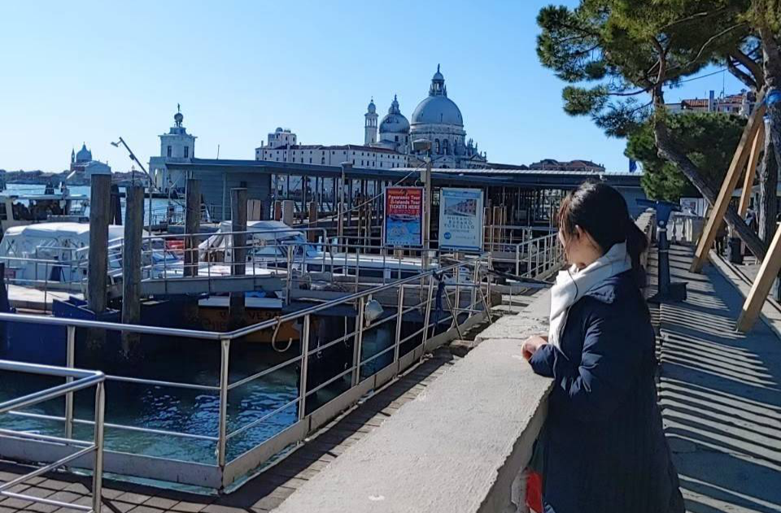

TOEIC300からでもCAになれるヒミツをお届け♡
♡9日間の無料メール講座♡
【お願い】icloudなどの携帯電話のアドレスは、迷惑メールに分類されて届かなくなる場合があります。
icloudではなく、gmailやyahoo、hotmailなどの、PCアドレスがオススメです♡
無料メール講座のお申込みは→こちら☆
私は、毎日朝から晩までの大学生活を過ごしながら、
3ヶ月という短期間でTOEICを320→675まであげて
CAに合格することができました！
CAになりたいのに、TOEICが思うようにのびず悩んでいる方へ
わたしが短期間でTOEICを伸ばしたノウハウを無料でお届けします♡
9日間のメールを読むと、TOEICの点数がスルスルあがり、エントリーシートも面接もスルスル通り、CA受験の不安がふっとびます！☆
自分でエントリーシートをスラスラと書けるようになり、
自分でTOEICの点数がみるみる上がるようになり、
自分で面接での答え方も考えることができるようになり、
お金をかけずに合格をすることができます！

CA受験は、
エアラインスクールに通って、
高額な証明写真を撮って、お辞儀の練習・沢山の企業研究ばかりしても合格できるわけではありません。
もっともっと大切なことがあります☆
それは『CAになることができるマインド』を掴むことです♡
さらにこれからのCA受験は『TOEIC600の基準点を超す』ことが必要です☆
この無料メール講座で
あなたのCA受験に対する不安や焦りをなくし、夢を叶える方法をお届けします！
９日間のメール講座の内容です♡
Day１【山田ひまりの自己紹介と、CAになれた理由】
Day2【CAになる為まずは必ず○○をすべき！！】
Day3【正しいCA受験対策のひとつ】
Day4【留学経験無し3ヶ月でTOEIC320→675までのびた方法】
Day5【TOEIC600到達する為に必ずしてほしい〇〇】
Day6【CA受験と人生において最も重要な〇〇】
Day7【エントリシートを書くときの注意点】
Day8【面接で通過するために重要なこと】
Day9【あなたが必ず愛されCAになれる理由】
無料メール講座のお申込みは→こちら☆